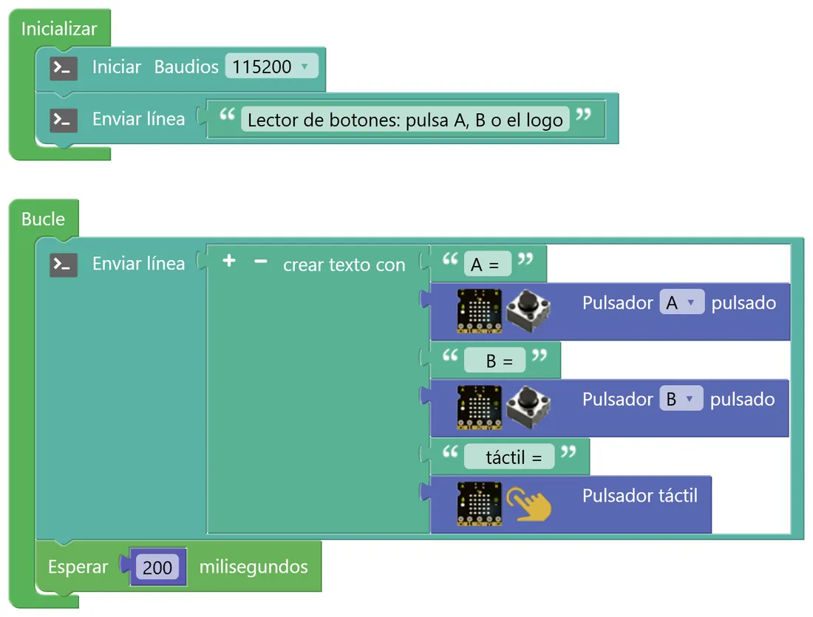
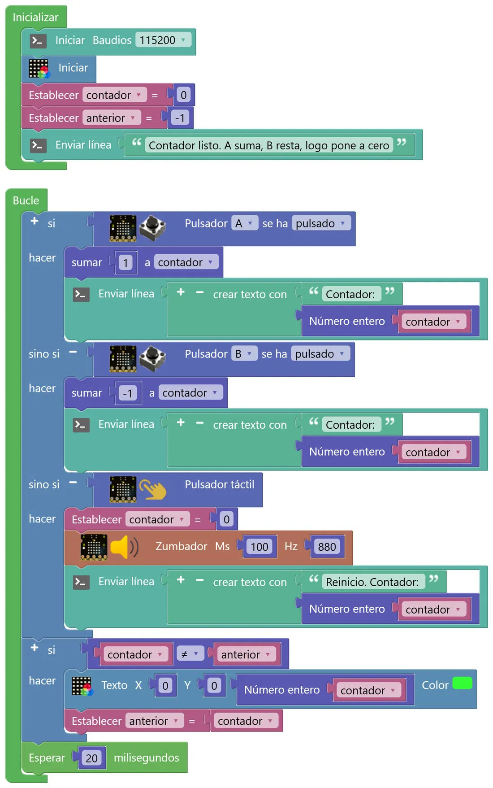
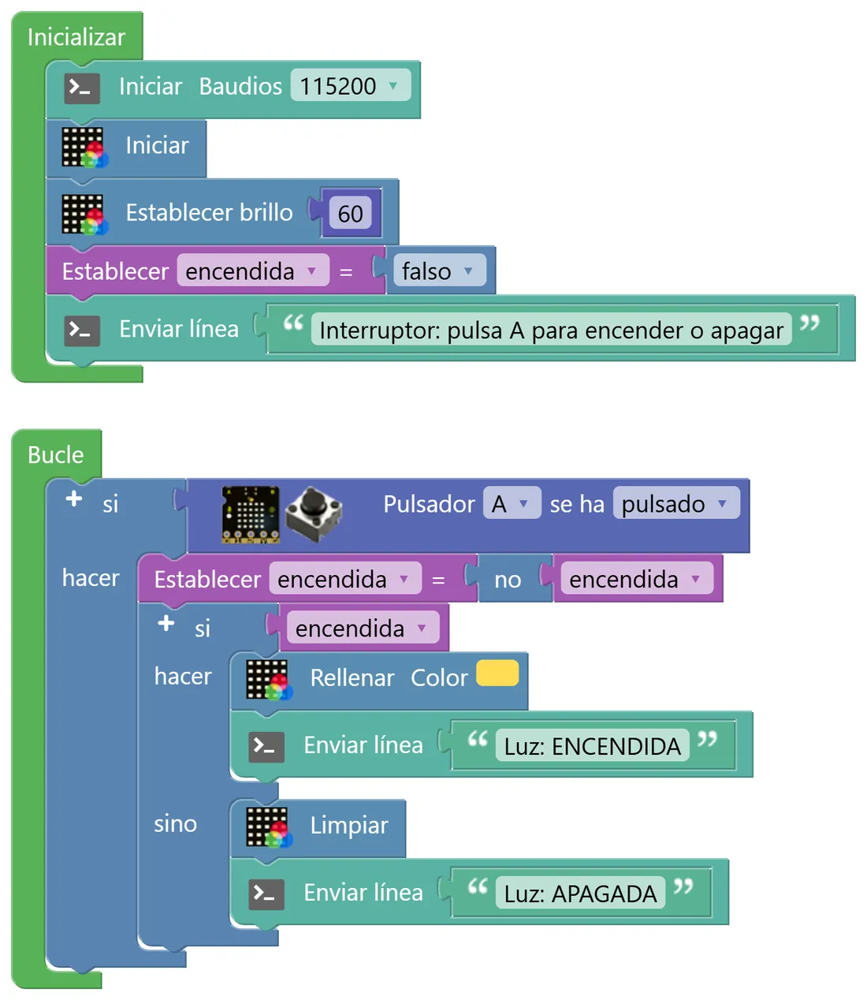

N3 Botones y decisiones
Hasta ahora la placa seguía un guion fijo. A partir de aquí empieza a escuchar: lee los botones y decide qué hacer según lo que pase. Es la base de cualquier sistema automático, desde un ascensor hasta una alarma.
🎯 Objetivo
- Leer los botones A y B y el logo táctil, y ver sus valores (0 y 1) en la consola.
- Distinguir entre «el botón está pulsado» y «el botón se ha pulsado».
- Tomar decisiones con si, sino si y si no, y combinar condiciones con y, o y no.
- Usar la consola para descubrir por qué un programa no hace lo que esperabas.
🧠 Antes de empezar
Un botón es un sensor digital: solo tiene dos estados, pulsado (1, verdadero) o suelto (0, falso). En STEAMakersBlocks hay dos bloques para leerlo y conviene no confundirlos:
| Bloque | Qué pregunta | Cuándo es verdadero | Úsalo para… |
|---|---|---|---|
| Pulsador A pulsado | ¿Está pulsado ahora mismo? | Todo el tiempo que lo mantienes apretado | Cosas que duran mientras aprietas (una luz, un motor) |
| Pulsador A se ha pulsado | ¿Acaba de producirse una pulsación? | Una sola vez por cada pulsación completa | Contar, cambiar de modo, encender/apagar |
Para decidir usamos el bloque si (menú Lógica). Con el engranaje azul puedes añadirle ramas sino si y una rama final si no. La placa comprueba las condiciones de arriba abajo y ejecuta solo la primera que se cumple: el orden importa.
🐍 En Python
if a and b: print("los dos") elif a: print("solo A") else: print("ninguno")
🧩 En STEAMakersBlocks
si = if · sino si = elif · si no = else
y = and · o = or · no = not
Comparar: = (==), ≠ (!=), <, >, ≤, ≥
🧩 Programa 1 · El lector de botones
Antes de usar un sensor hay que verlo. Este programa envía cinco veces por segundo el estado de los tres pulsadores. Fíjate en que no hay ningún «si»: solo leemos y mostramos.

- ¿Qué valor da cada pulsador en reposo y qué valor da mientras lo mantienes pulsado?
- Haz una pulsación muy rápida, de un instante. ¿Aparece siempre en la consola? ¿Por qué crees que a veces se «pierde»? (Pista: ¿cada cuánto tiempo mira la placa?)
- Pulsa A y B a la vez. ¿Consigues que los dos marquen 1 en la misma línea?
🧩 Programa 2 · El contador
A suma 1, B resta 1 y el logo pone el contador a cero con un pitido. Cada cambio se cuenta por la consola y el número se dibuja en la matriz. Para que la matriz no parpadee, solo se redibuja cuando el valor cambia: para eso sirve la variable anterior.

- Crea dos variables de número:
contador(empieza en 0) yanterior(empieza en −1, un valor imposible, para que el primer número se dibuje seguro). - Un si con dos ramas sino si: A se ha pulsado → sumar 1; B se ha pulsado → sumar −1; táctil → contador = 0 y zumbador. En cada rama, un «Enviar línea» que diga el valor.
- Otro si: si
contador ≠ anterior→ Texto en la matriz con Número entero(contador) y despuésanterior = contador.
- Cambia «se ha pulsado» por «pulsado» en la rama de A y prueba. ¿Qué le pasa al contador? La consola te dará la pista.
- Lleva el contador a 10 y después a −1. ¿Qué se ve en la matriz? ¿Por qué el 11 sí se ve bien? (Recuerda cómo es el «1» en la fuente de 5×5).
- Quita el segundo «si» y pon el bloque Texto suelto al final del Bucle. ¿Notas algún parpadeo o destello en la matriz?
🧩 Programa 3 · El interruptor
Con un solo botón, encender y apagar una luz. El truco es una variable de tipo verdadero/falso, encendida, que cambia a su contrario cada vez que pulsas: encendida = no encendida. Después, un si… si no decide qué hacer según su valor.

- Si
encendidavale falso, ¿cuánto vale no encendida? - ¿Qué pasaría si usaras «pulsado» en lugar de «se ha pulsado»? Pruébalo manteniendo el botón: ¿qué ves en la consola y en la matriz?
🚀 Retos
Semáforo a mano
A pone la matriz en verde, B en rojo y el logo la apaga. La consola dice siempre en qué estado está. ¿Qué bloque de pulsador usarás, «pulsado» o «se ha pulsado»?
Botón doble
Solo A → verde. Solo B → rojo. A y B a la vez → ámbar con un pitido. Ninguno → apagado. La consola solo debe escribir cuando el estado cambie, no cinco veces por segundo. Cuidado con el orden de las condiciones.
Contador sin límites
Mejora el contador para que se lean bien los números de dos cifras y los negativos: si tiene una cifra (de 0 a 9), fijo; si no, con Texto con scroll, y que el scroll se repita mientras el número no cambie. Necesitarás «y», «no» y el bloque ¿Texto desplazándose?.
🔧 Bajo el capó: lógica inversa y rebotes
Así traduce STEAMakersBlocks el Programa 1:
Serial.println(String("A = ") + String(!digitalRead(0)) + String(" B = ") + String(!digitalRead(17)) + String(" táctil = ") + String(digitalRead(27)));
¿Ves el signo ! (que significa no) delante de los botones? Los botones A (pin io0) y B (io17) están conectados con lógica inversa: en reposo el pin está a 3,3 V (lee 1) y al pulsar se une a masa (lee 0). El bloque le da la vuelta con ! para que tú veas 1 al pulsar. El logo táctil (io27) da directamente 1 cuando lo tocas.
🔁 «Se ha pulsado» y los rebotes
Un pulsador es una pieza mecánica: al apretarlo, sus contactos chocan y rebotan varias veces en unos milisegundos, y la placa podría contar varias pulsaciones en vez de una. Por eso el bloque «se ha pulsado» usa una pequeña librería con antirrebote:
Button button_debounced_0(0, 50); // pin 0, 50 ms de antirrebote if (button_debounced_0.released()) { ... }
Ignora los cambios que duran menos de 50 ms y avisa una sola vez por pulsación completa (fíjate en released: reacciona al soltar).
🧮 El interruptor, en C++
b_encendida = (!b_encendida); // cambia a su contrario if (b_encendida) { ...FillColor(CRGB(255,221,85)); } else { ...Clear(); }
Es exactamente encendida = not encendida de Python.
🔎 ¿Lo has entendido?
Cuando termines, haz una captura con tu puntuación para el porfolio.
📁 Al porfolio
- Capturas de tus tres programas y de la consola de cada uno.
- Tus respuestas a «Interpreta lo que ves», sobre todo la diferencia entre «pulsado» y «se ha pulsado» con lo que viste en la consola.
- Vídeo corto del contador o del interruptor funcionando.
- El reto que hayas hecho, con su captura de consola y una explicación de por qué has ordenado así las condiciones.
- Captura de tu resultado en «¿Lo has entendido?».